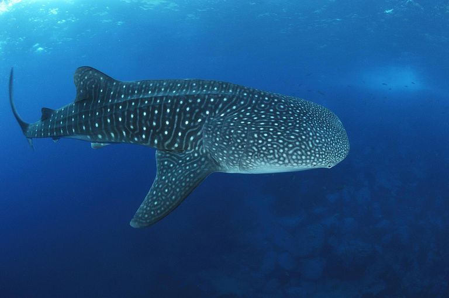

Shark Whale!
The whale shark (Rhincodon typus) is a slow-moving, filter-feeding carpet shark and the largest known extant fish species. The largest confirmed individual had a length of 18.8 m (62 ft) The whale shark holds many records for size in the animal kingdom, most notably being by far the largest living nonmammalian vertebrate. It is the sole member of the genus Rhincodon and the only extant member of the family Rhincodontidae, which belongs to the subclass Elasmobranchii in the class Chondrichthyes. Before 1984 it was classified as Rhiniodon into Rhinodontidae.